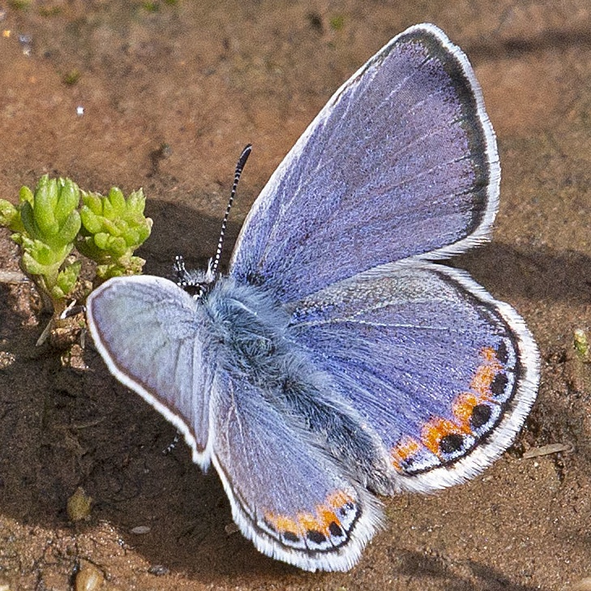

Icaricia acmon
- Common name
- Acmon blue
- Family
- Lycaenidae
- Family common name
- Gossamer Wings
- On the wing
- E April to E October, peaks in May-June, August-September
One generation
- Habitat
- Open lowland and montane habitats, from desert, steppe, and forest glades, to roadsides, weedy disturbed areas, gullies and streambanks, alpine and subalpine slopes, and gravel strands.
- Larval host:
- Snow buckwheat, other buckwheats, birdsfoot trefoil, lupines, other legumes.
- Nectar plants:
- Hosts, plus clematis, goldenrod, rabbitbrush, milkweed, aster, blue mints and alpine cushion plants.
- Abundance
- C
Range Map
Seasonality